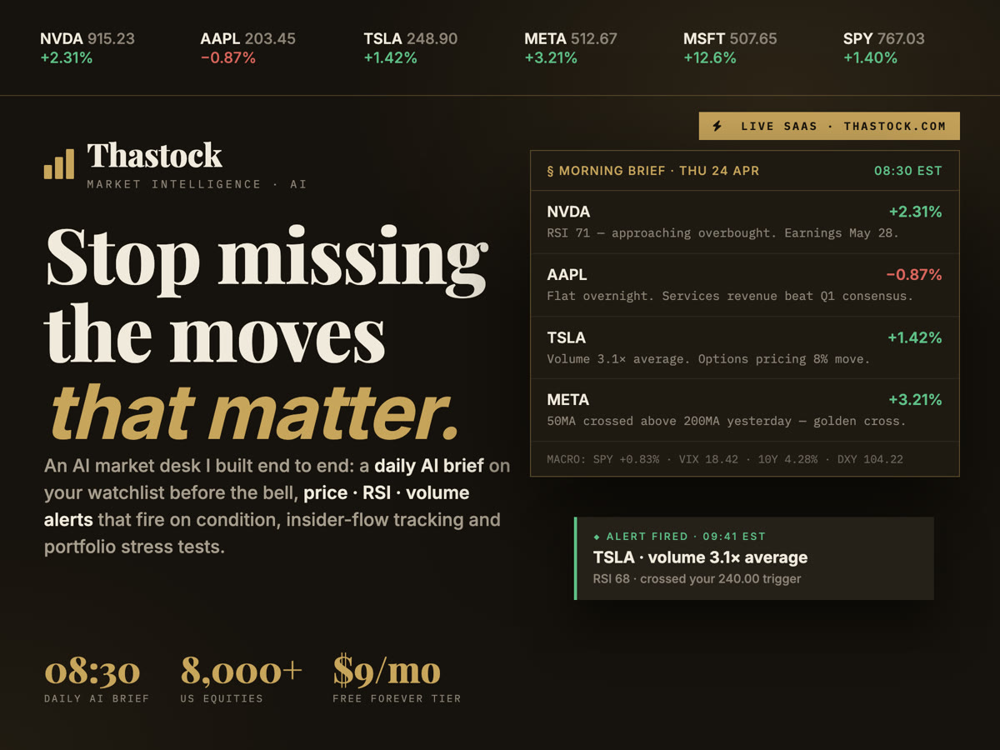
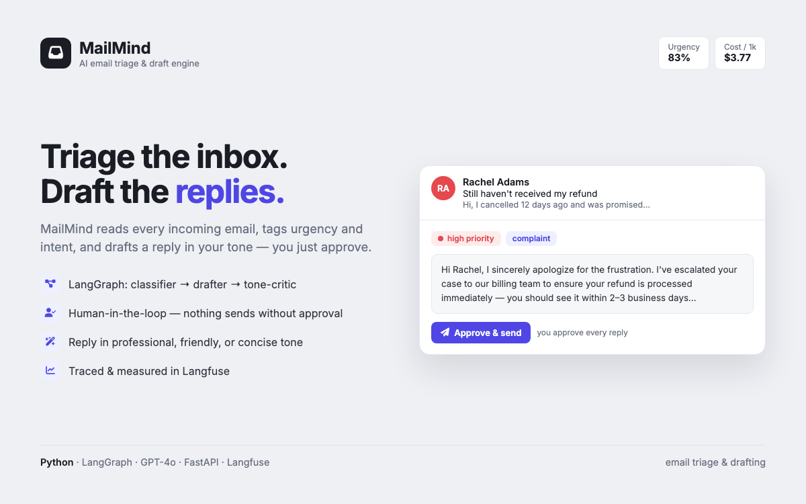
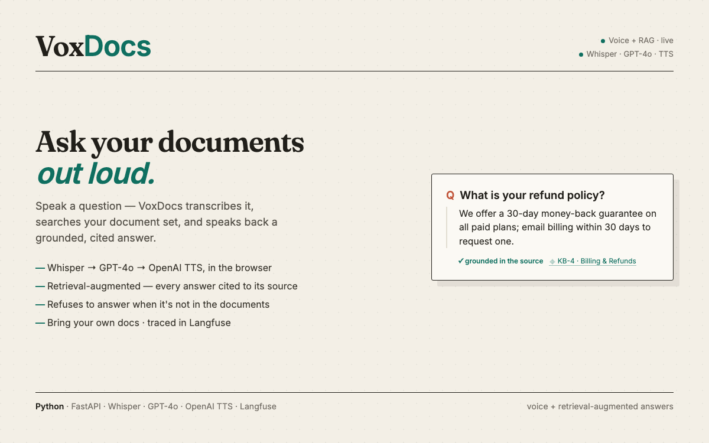

Nine systems.
All of them live.
Public URLs, no signup. Open one and use it. Where a project has measured results, the numbers below came from an eval harness, not an estimate.

An AI market desk, shipped end to end
A full product I designed, built and launched alone. An AI-written brief on your watchlist at 08:30 every trading day (overnight moves, RSI, earnings, macro), an alert engine firing on price · RSI · volume · MA-cross with compound AND/OR conditions, per-ticker AI research, SEC Form 4 insider filings parsed in real time, an 8,000-equity screener, portfolio optimizer and stress testing.

An agent that knows when to escalate
A LangGraph agent for prior authorization: retrieve → proposer → critic → judge, grounded in clinical criteria. It auto-resolves the clear cases and escalates every denial and every low-confidence case to a human, with a send-back self-correction loop. Each node traced in Langfuse, so a decision can be audited months later. 55% auto-resolved at ~$0.005 a decision.

Natural language to SQL a CFO can trust
The LLM never writes raw SQL. It emits a validated query spec that a compiler turns into SQL using only certified joins — which structurally prevents fan-out inflation rather than hoping the model avoids it. A governed semantic layer gives every metric one definition, metadata-RAG grounds the plan, and every answer is reconciled against an independent trusted-SQL report.

What tracing is actually for
A LangGraph pipeline (router → retriever → scorer) fully instrumented with Langfuse. The case study is the point: I used the traces to find and fix real failure modes, and measured the result — parse failures 100% → 0%, accuracy 83% → 89%, latency −37%, cost −95%. Same task, same model family; the difference is knowing where it was going wrong.

Seven production voice agents, one platform
A shared call-outcome service that any agent — Vapi, Retell AI or n8n — posts into, with a purpose-built operator dashboard per trade: self-storage, plumbing, dental, real estate, restaurants, appliance support, and legal voicemail pushed to Cisco desk phones over CiscoIPPhone XML. One FastAPI service speaks both Vapi's and Retell's webhook dialects. Each agent's brain is tested in an automated harness before it touches a phone number.

Drafts your reply, waits for your yes
Reads every incoming email, tags urgency and intent, and drafts a reply in your tone — a LangGraph pipeline of classifier → drafter → tone-critic with human approval before anything sends. Traced in Langfuse; measured 83% classification accuracy at ~$3.77 per 1,000 emails.

Cited answers, or an honest refusal
Source-cited Q&A over contracts, reports and PDFs: OCR-fallback ingestion, structure-preserving chunking with page metadata, hybrid retrieval (Chroma + BM25) with reranking, page-level citations, and a guard that flags low confidence instead of guessing. The refusal path is the feature.

Ask your documents out loud
Speak a question — VoxDocs transcribes it with Whisper, retrieves the relevant passages, answers grounded only in your documents with citations, and speaks the answer back. An anti-hallucination guard refuses when the answer isn't in the docs. Bring your own files; every turn traced in Langfuse.

A state machine that finishes the booking
Talk to it in the browser: Whisper → GPT-4o → OpenAI TTS driven by a LangGraph state machine (greet → qualify → schedule → confirm) that captures intake and books a real calendar invite. The state machine is why it doesn't wander — 100% booking completion across 10 test calls, averaging 23 seconds.